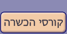

|

|

|
 |

|

|

|

|
גישור ישראל
ביני בר לב, עו"ד - מגשר

ביני בר-לב, מגשר ועו"ד, מייסד ועומד בראש גישור ישראל.
בעל ניסיון רב ויכולת לאתר את נקודות המחלוקות, גם בסכסוכים קשים, על מנת להגיע להסכמות ולהבאת הצדדים לכדי פיוס, הבנות והסכם.
ממייסדיי תחום הגישור בארץ.
בוגר האוניברסיטה העברית במשפטים משנת 1982, וקורס לניהול עסקי בכיר באוניברסיטה העברית – 1992.
בעל תואר שני במשפטים באוניברסיטה העברית, עם דגש על יישוב סכסוכים- 2009.
מגשר - בעל ניסיון באלפי גישורים מול רבבות מגושרים בסכסוכים בהם הצדדים פנו לגישור באופן פרטי, ובסכסוכים שהגיעו מבתי המשפט השונים: בית המשפט העליון, בתי משפט מחוזיים, בתי משפט השלום, בתי משפט לענייני משפחה, בית הדין הארצי ובתי הדין האזוריים לעבודה. עו"ד בר לב עוסק בגישור ורק בגישור החל משנת 1997. עד היום הושגו בסיועו של עו"ד בר לב כמגשר אלפי הסכמי גישור.
בורר - לעיתים הצדדים מתחילים בגישור וההסכמה היחידה שהם מגיעים אליה היא שאין הסכמה ביניהם, וכך במחלוקות מסחריות, במחלוקות בענייני מקרקעין ובמחלוקות בין שותפים או בעלים משותפים של חברות, מכריע עו"ד בר לב כשופט פרטי על פי מה שהוצג בפניו ועל פי שיקול דעתו. בדרך זו הצדדים מבטיחים לעצמם כי המחלוקת ביניהם תיפתר במהירות יחסית.
עד 2008 – עסק בגישור ובהדרכת הגישור במקביל. בעל ניסיון של אלפי שעות הדרכה, בקורסי גישור שהועברו למוסדות רבים, למשרדי הממשלה, לחברות פרטיות ולקהל הרחב, ומייסד הפרקטיקום- קורס מתקדם בגישור - בשנת 1999.
"כתוצאה מטיפול ברבבות אנשים שהופיעו בפני באלפי מחלוקות, למדתי יותר ויותר על הנזק הרב הנגרם לאדם כתוצאה מהסכסוך. אנשים מאבדים זמן רב, המון כוחות, סכומים ניכרים של כסף ופוגעים בבריאות ובשמחת חייהם. כתוצאה מכך, מצאתי דרכים המאפשרות לעזור לרוב האנשים המופיעים בפני להיפרד מהסכסוך ולבנות פתרון ראוי. למדתי גם להכיר כי אנשים קצרים בזמן ובאמצעים, ובתור מגשר מאוד עמוס אני פועל, בכל גישור וגישור על מנת שישבו מולי למשך הקצר האפשרי וילכו הביתה ככל שניתן עם הסכם"